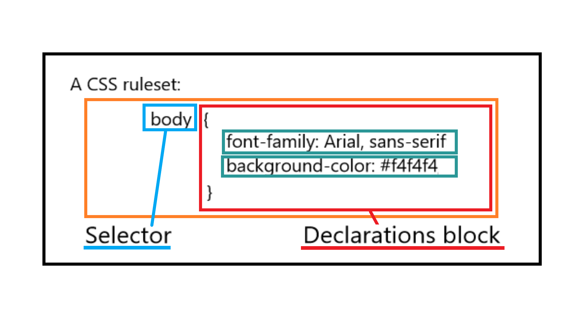

Cascading Style Sheet (CSS)
What is CSS?
- It is used to specify how websites/documents are displayed/presented. It is purposely used for presentation aspects such as for fonts, colors, and screen layouts of HTML, XML, SVG, MathML documents and other documents using a markup language languages used to indicate how documents are presented or structured. It uses tags to define the structure of the document. .
VERSION HISTORY (a.k.a 'The CSS Saga')
-
1994
- Hakon Wium Lee released the draft of 'Cascading HTML Style Sheets' along with Bert Bos who was, at that time, developing a browser name Argo, which supports its own stylesheet.
- The proposal for 'Cascading HTML Style Sheets' was launched.
-
1996
-
CSS Level 1 was published as a W3C Recommendation
-
CSS Level 1 supports the following features:
- font properties
- text attributes
- alignment of text
- tables
- images
- text colors
- backgrounds
- word spacing
- margins
- borders
- padding
- positioning
-
CSS Level 1 supports the following features:
- Mozilla browser was the first ever browser to support CSS.
-
CSS Level 1 was published as a W3C Recommendation
-
1998
- CSS Level 2 became a W3C Recommendation
-
Features which were not included in CSS Level 1 were added to CSS Level 2
-
CSS Level 2 added the following fetures:
- z-index
- media types
- bidirectional text
- absolute, relative and fixed positioning
-
CSS Level 2 added the following fetures:
- The new browser 'Opera' was released which supports CSS.
-
2011
- W3C released CSS Level 2.1 which fixes errors/bugs in CSS Level 2 and fixed its browser function capabilities.
-
Around 2012
-
CSS Level 3 was released which was a modular approach to CSS
Development (as opposed to the 'monolithic' specification of
CSS Level 2.1).
-
The following are the 4 modules which were released as
formal recommendation:
- color
- selectors level 3
- namespaces
- media queries
-
The following are the 4 modules which were released as
formal recommendation:
-
CSS Level 3 was released which was a modular approach to CSS
Development (as opposed to the 'monolithic' specification of
CSS Level 2.1).
HTML Style Sheets
- Three Main source styles for HTML Documents:
-
A. Author Style
-
A.1 External
- a.k.a 'Linked Stylesheet' which is recommended because it provides easier caching and it can be edited easily as well as it can be used in multiple sites and documents.
- These are stylesheets separated from the HTML documents.
-
A.2 Embedded
- a.k.a 'Internal Stylesheet' which is not very much recommended because since it is internal, it cannot be used by other sites/documents.
- These are style sheets defined within the HTML Document.
-
A.3 Inline
- These style sheets are defined within the HTML tags.
-
A.1 External
-
B. User Styles
- These are non-standard styles such that it allows users to provide their own style sheet or preferred layout for the website.
- Some browsers also provide alternative styles through plugins and extensions. For example, Chrome's extension called 'Stylish Extension' provides different themes for different websites which the users can choose from.
-
C. User Agent Styles
- Browsers provide their own/default style sheet in rendering the websites.
CSS Statements
-
At-Rules
- these are commonly denoted with an annotation '@'
-
Example:
- @charset
- @import
- @namespace
-
@font-face
- At-Rule used for defining font-styles which are typically Google Fonts
-
@Keyframes
- At-Rule used for animations
-
* Nested At-Rules
- These are At-Rules within an At-Rule
- Example: @media
-
CSS Rule Sets
- a.k.a 'CSS Rules'/ 'Style Rules'
- consists of a selector followed by a brace-enclosed declaration block that contains 0 or more declarations that end in semi-colon(;).
- Sytax: 
CSS Selectors
Selector
-
- Structure used as a condition in a CSS Rule
- It is used to specify the HTML elements we want to style.
-
TYPES OF SELECTOR:
-
Simple Selector
-
- It does not contain any combinators which means that it cannot contain other types of selectors or Universal selectors.
- It starts with a type selector (HTML element) or a Universal Selector.
-
Example:
h1 {text-align: center;}
-
Types of Simple Selectors:
-
a. Universal Selector
- It is denoted by an asterisk (*) symbol.
- It means that it targets any element or component of the document.
-
Example:
* {font-size: 20px;}
-
b. Type Selector
- It specifies the element type specifically the HTML element allowing all elements that matches the indicated type Selector to be styled.
-
Example:
p {color: red;}
-
c. ID Selector
- It is always introduced by the pound (#) sign.
- This type of selector targets elements that has an attribute called 'id' and the values of the attributes matches the specified ID selector.
-
Example:
#main {padding: 10px;}
-
d. Class Selector
- It is always introduced by the period (.).
-
It is somewhat similar to the ID Selector but it
uses the values of the 'class' attribute instead.
-
Example:
.container {margin-bottom: 10px;}
-
Example:
-
It can also target class attributes with 2 or more values.
-
Example:
p.feature.quote {text-align: justify;}
-
Example:
- Attribute Selector
-
a. Universal Selector
-
- Selector Group
- Combinators
- Pseudo-Classes
-
Simple Selector